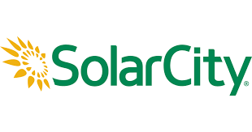
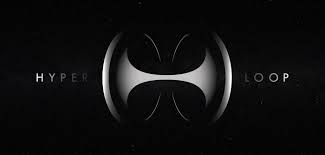
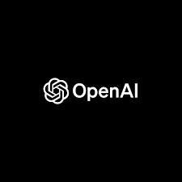

"The first step is to establish that something is possible; then probability will occur."
-ELON MUSK
WHO IS ELON MUSK?
- Musk was born on June 28, 1971, in Pretoria, Transvaal, South Africa.
- At age 10, he developed an interest in computing with the Commodore VIC-20. He taught himself computer
programming and at age 12, sold the code for a BASIC-based video game he created called Blastar.
- Musk was initially educated at private schools, attending the English-speaking Waterkloof House Preparatory
School. Musk later graduated from Pretoria Boys High School and moved to Canada in June 1989.
- At the age of 19, Musk was accepted into Queen's University in Kingston, Ontario, for undergraduate study.
In 1992, after spending two years at Queen's University, Musk transferred to the University of Pennsylvania,
where, at the age of 24, he received a Bachelor of Science degree in physics from its College of Arts and
Sciences, and a Bachelor of Science degree in economics from its Wharton School of Business. Musk extended his
studies for one year to finish the second bachelor's degree.
- In 1995, at age 24, Musk moved to California to begin a PhD in applied physics and materials science at
Stanford University. In 2002, he became a U.S. citizen.
ACHIEVEMENTS
- Zip2
- In 1995, Musk and his brother, Kimbal, started Zip2, a web software company, with US$28,000 of their
father's money.
- X.com and PayPal
- In March 1999, Musk co-founded X.com, an online financial services and e-mail payment company, with
US$10 million from the sale of Zip2. One year later, the company merged with Confinity, which had a money
transfer service called PayPal. The merged company focused on the PayPal service and was renamed PayPal in
2001.
- SpaceX
- With US$100 million of his early fortune, Musk founded Space Exploration Technologies, or SpaceX, in
June 2002. SpaceX develops and manufactures space launch vehicles with a focus on advancing the state of
rocket technology.
- Tesla Motors
- Is an American automaker and energy storage company co-founded by Elon Musk, Martin Eberhard, Marc
Tarpenning, JB Straubel and Ian Wright, and is based in Palo Alto, California. The company specializes in
electric cars, their powertrain components, and also produces battery charging equipment.
- SolarCity
- Musk provided the initial concept and financial capital for SolarCity, which was then co-founded in 2006
by his cousins Lyndon and Peter Rive. SolarCity is now the second largest provider of solar power systems
in the United States.
- Hyperloop
- On August 12, 2013, Musk unveiled a concept for a high-speed transportation system incorporating
reduced-pressure tubes in which pressurized capsules ride on an air cushion driven by linear induction
motors and air compressors.
- OpenAI
- In December 2015, Elon Musk announced the creation of OpenAI, a not-for-profit artificial intelligence
(AI) research company. OpenAI aims to develop artificial general intelligence in a way that is safe and
beneficial to humanity.





"If something is important enough, you do it even if the odds are not in your favor."
-ELON MUSK